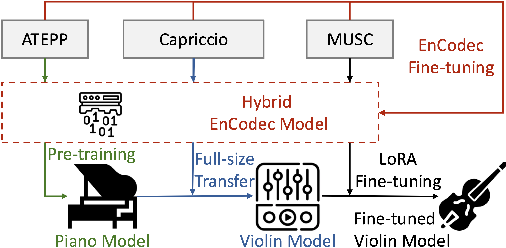

Abstract
Music performance synthesis (MPS) for musical instruments remains challenging due to insufficient expressive datasets and limited modeling of instrument-specific playing techniques. In particular, many instruments such as the violin require handling multiple articulations with heterogeneous and distinct physical excitation mechanisms, while existing neural network-based MPS models largely ignore such distinctions. We propose VioLM, a language-model-based violin synthesis framework that generates expressive audio from MIDI scores with articulation labels. To address data scarcity, VioLM combines an expressive data generation pipeline with a two-stage transfer learning strategy. Specifically, we first adapt a pre-trained piano-based VALL-E model to the violin domain using synthetic data, and then further improve audio fidelity by fine-tuning the model on a small set of real violin performances using LoRA. Experimental results demonstrate that VioLM improves generation quality on the evaluated cases, presenting the first neural network-based MPS system with explicit control over violin articulations.
System Architecture

Synthesis Quality Comparison
Seven samples drawn from the test set. Each sample is rendered by all conditions. ★ denotes the proposed model.
| Condition | Sample 1 | Sample 2 | Sample 3 | Sample 4 | Sample 5 | Sample 6 | Sample 7 |
|---|---|---|---|---|---|---|---|
|
Reference
Real violin recording
|
|||||||
|
Arti-SFT
VioLM with articulation + LoRA fine-tuning
|
|||||||
|
No-Arti-SFT
VioLM without articulation, with LoRA fine-tuning
|
|||||||
|
Arti
Articulation conditioning only, no LoRA fine-tuning
|
|||||||
|
No-Arti
No articulation, no LoRA fine-tuning
|
|||||||
|
ViolinDiff
Diffusion-based baseline
|
|||||||
|
MIDI Player
Rule-based MIDI rendering
|
|||||||
|
Anchor
Low-quality anchor (listening-test reference)
|
References
- J. Tang, X. Wang, Z. Zhang, J. Yamagishi, G. A. Wiggins, and G. Fazekas, “MIDI-VALLE: Improving expressive piano performance synthesis through neural codec language modelling,” in Proc. Int. Soc. Music Inf. Retrieval Conf. (ISMIR), Daejeon, South Korea, 2025, pp. 623–630. doi:10.5281/zenodo.17706539
- D. Kim, H.-W. Dong, and D. Jeong, “ViolinDiff: Enhancing expressive violin synthesis with pitch bend conditioning,” in Proc. IEEE Int. Conf. Acoust., Speech, Signal Process. (ICASSP), Hyderabad, India, 2025, pp. 1–5. doi:10.1109/ICASSP49660.2025.10890613
- A. Défossez, J. Copet, G. Synnaeve, and Y. Adi, “High fidelity neural audio compression,” Transactions on Machine Learning Research (TMLR), 2023.
- H. Zhang, J. Tang, S. R. M. Rafee, S. Dixon, and G. Fazekas, “ATEPP: A dataset of automatically transcribed expressive piano performance,” in Proc. Int. Soc. Music Inf. Retrieval Conf. (ISMIR), Bengaluru, India, 2022, pp. 446–453. doi:10.5281/zenodo.7342764
- N. C. Tamer, Y. Özer, M. Müller, and X. Serra, “High-resolution violin transcription using weak labels,” in Proc. Int. Soc. Music Inf. Retrieval Conf. (ISMIR), Milan, Italy, 2023, pp. 223–230.